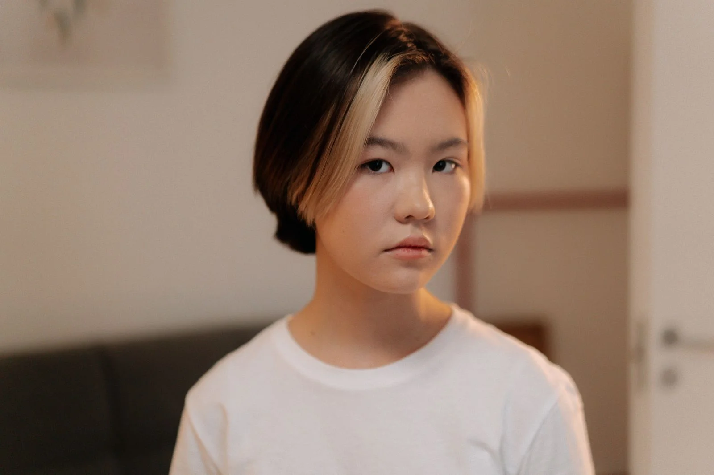
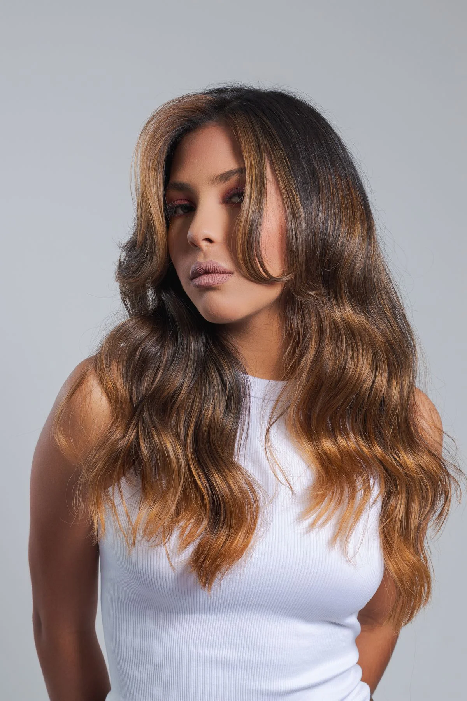
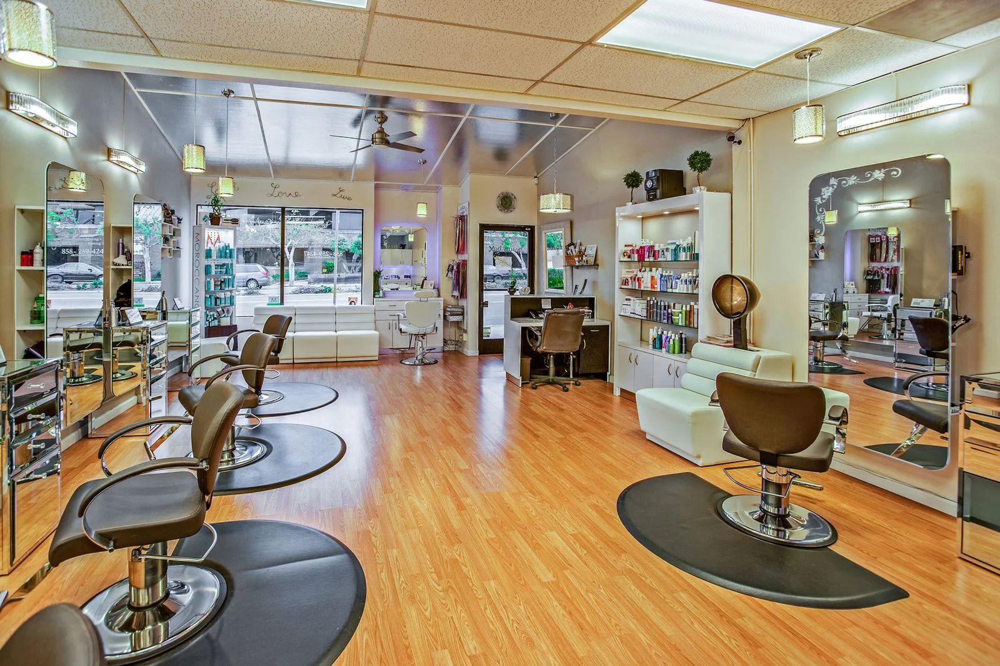
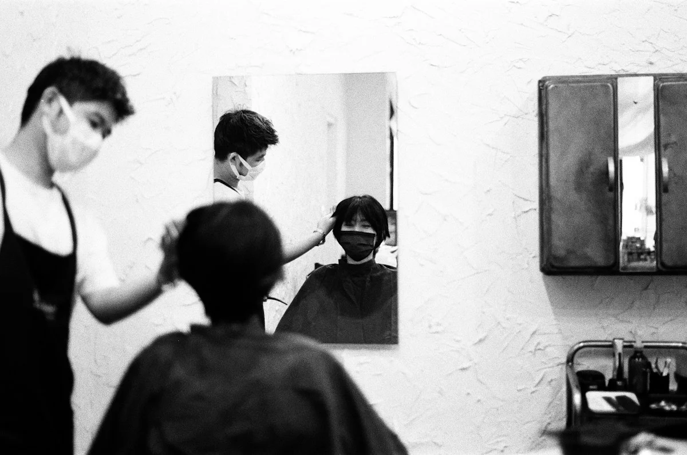

カット
顔まわりと全体のバランスを整える。
¥5,500約60分
NAGI HAIR / PRIVATE SALON
鏡を見るのが、ちょっと楽しみになる。背伸びせずに似合う髪を、一緒に見つけませんか。
葛飾区の小さな美容室を想定した架空デモ

The styles.
HAIR STYLE / 自分らしさを見つける
すっきりした横顔。ふと揺れる毛先。毎朝の支度が楽しみになる、あなたらしいバランスを探して。

掲載写真はスタイルのイメージです。当サロンの施術事例ではありません。

THE SALON / SPACE IMAGEA LITTLE TIME FOR YOURSELF
「短くしたい。でも、似合うかな」そんな迷いも、そのまま聞かせてください。
髪のくせや、朝のお手入れにかけられる時間。日々の話から、無理なく続くスタイルを考えます。相談から仕上げまで、一人が担当するサロンです。

FIRST VISIT
来店前の、ちょっと気になること。
もちろんです。好きな雰囲気の写真があれば、ぜひお見せください。髪の状態や普段のお手入れを伺いながら、一緒に考える想定です。
はじめに髪の悩みやご希望を伺い、メニュー・料金・所要時間をご説明します。内容を確認してから施術し、最後に自宅での乾かし方や整え方をお伝えする想定です。
はい。カット・カラー・パーマで迷っている場合も、髪の状態を見てから相談して決める想定です。施術前に料金と時間を確認します。
このページは自主制作の架空デモです。ボタンからメニュー選択の体験ができますが、実際の予約はできません。個人情報の入力・外部送信・電話発信・決済機能はありません。
SALON INFORMATION
日々の途中に、髪を整える時間を。
東京都葛飾区を想定した、架空の美容室です。
営業時間・営業形態はデモ用の設定です。実店舗はないため、住所・駅からの道順・地図は掲載していません。
RESERVATION
メニューが決まっていなくても。まずはご相談ください。あなたの「こうなりたい」から、一緒に考えます。
髪を変えたい、その気分から。
BOOK YOUR NEXT HAIR予約へ進むメニューを選ぶ・相談して決めるメニューを相談して決めたい予約の選択体験ができる架空デモです。個人情報の入力・実際の予約・送信は行いません。